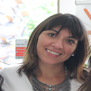
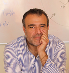

<section id="about" class="section">
		<div class="container">
			<h4>Quienes somos</h4>
			<div class="row">
				<div class="span10 offset1">
					<div>
						<h2>Promovemos relaciones <strong>sanas y satisfactorias</strong></h2>
						<p class="texto-justificar">

							En tiempos en donde el éxito y las múltiples exigencias impactan con fuerza hacia el desarrollo laboral y escolar, hemos
							creado en nuestra comuna un espacio de escucha, ofreciéndoles nuestra experiencia como agentes de cambio con el propósito
							de promover relaciones sanas y satisfactorias entre todos los miembros de la familia. Vidacción es un espacio de crecimiento,
							colaboración y aprendizaje en el que trabajamos para acompañar a los niños y sus familias en los distintos desafíos
							de la vida, con respeto, cariño y profesionalismo. Acogemos a las personas que enfrentan procesos de crisis a nivel
							individual, de pareja o familiar, poniendo a su disposición un espacio íntimo en el cual puedan aprender nuevas formas
							de relacionarse. Porque creemos que todos tenemos la capacidad de recuperarnos frente a la adversidad y seguir construyendo
							futuro, nuestro compromiso es entregar las herramientas necesarias que permitan convertir las actuales dificultades
							en nuevas oportunidades de aprendizaje. Los invitamos a vivir la aventura de indagar para descubrir, conocer y ampliar
							sus talentos, fortalezas y aspiraciones. A formular nuevas creencias que les impulsen a ser mejores y a organizarse
							mejor. A través de diversas intervenciones, desarrollamos junto a ustedes una propuesta que los ayude a salir de sus
							propios límites, animándolos en la alegría de vivir sus sueños y de construir juntos un futuro mejor. De esta forma
							Vidacción, pone a su disposición un completo equipo profesional de excelencia, destinado a permitir el desarrollo
							pleno de las familias de nuestra comuna.


						</p>
					</div>
				</div>

			</div>
			<div class="row">
				<div class="span5 offset1 flyIn">
					<div class="people">

						
						<h3>Karem Chomali M.</h3>
						<p class="texto-justificar">
							Socia Fundadora y Directora Clínica, Psicóloga titulada con especialización en el área Infantil y adolescente. Magíster en
							Psicología Clínica. Diplomada en Intervención adolescente y Terapeuta Floral. De su desempeño profesional se desprende
							la atención clínica con niños, jóvenes y sus familias tanto en consulta privada como dentro de diversos Programas
							Ministeriales de Protección a la Infancia, junto con la entrega de conocimientos a través de la Docencia, la Supervisión
							Clínica y la Coordinación de Equipos de Tratamiento.
						</p>
					</div>
				</div>
				<div class="span5 flyIn">
					<div class="people">
						
						<h3>Luis César Chomali CH</h3>
						<p class="texto-justificar">
							Socio Fundador, Ingeniero Universidad de Chile. Magíster de la Universidad Adolfo Ibáñez. Coach Ontológico Certificado por
							Newfield Consulting. Coach Apreciativo Certificado por Universidad Adolfo Ibañez & Case Western University . Terapeuta
							Floral Colegio Terapeutas de Chile. Terapeuta en Evaluación Bioenergética.
						</p>
					</div>
				</div>

			</div>
		</div>
		<!-- /.container -->
	</section>